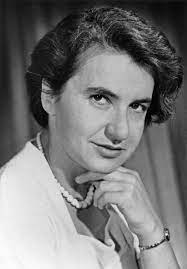
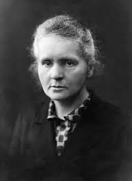

Chemistry is a branch of natural science that deals principally with the properties of substances, the changes they undergo, and the natural laws that describe these changes.
Joseph Priestley ( 24 March 1733 – 6 February 1804) was an English chemist, natural philosopher, separatist theologian, grammarian, multi-subject educator, and liberal political theorist. He published over 150 works, and conducted experiments in electricity and other areas of science. He was a close friend of, and worked in close association with Benjamin Franklin involving electricity experiments.
Rosalind Elsie Franklin (25 July 1920 – 16 April 1958)[1] was a British chemist and X-ray crystallographer whose work was central to the understanding of the molecular structures of DNA (deoxyribonucleic acid), RNA (ribonucleic acid), viruses, coal, and graphite. Although her works on coal and viruses were appreciated in her lifetime, Franklin's contributions to the discovery of the structure of DNA were largely unrecognized during her life, for which Franklin has been variously referred to as the "wronged heroine", the "dark lady of DNA", the "forgotten heroine",a "feminist icon", and the "Sylvia Plath of molecular biology".
Maria Salomea Sklodowska-Curie (Polish: [ 7 November 1867 – 4 July 1934), known simply as Marie Curie , was a Polish and naturalized-French physicist and chemist who conducted pioneering research on radioactivity. She was the first woman to win a Nobel Prize, the first person to win a Nobel Prize twice, and the only person to win a Nobel Prize in two scientific fields. Her husband, Pierre Curie, was a co-winner of her first Nobel Prize, making them the first-ever married couple to win the Nobel Prize and launching the Curie family legacy of five Nobel Prizes. She was, in 1906, the first woman to become a professor at the University of Paris.